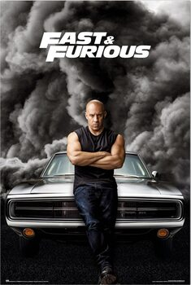

My Photo

Overview of the Image
Title: The image is a promotional poster for the "Fast & Furious" film series.
Main Element: It features a central character, a muscular man dressed in a sleeveless shirt, leaning against a classic muscle car amidst dramatic smoke.
Interesting Points
- Cinematic Impact: The "Fast & Furious" franchise is known for revolutionizing action films by incorporating high-octane car chases, elaborate stunts, and a focus on themes of family and loyalty.
- Cultural Influence: The series has significantly influenced car culture and street racing, popularizing various automotive brands and models.
- Character Development: The central character often embodies themes of inner strength and resilience, making him a relatable icon for many fans.
- Iconic Vehicle: The car depicted, often associated with American muscle, is symbolic of speed, power, and the passion for driving—a central element in the franchise.
- Franchise Longevity: Since its inception in 2001, the franchise has expanded into numerous sequels, spin-offs, and even animated series, showcasing its lasting popularity and cultural relevance.
Conclusion
The image encapsulates the thrilling essence of "Fast & Furious," representing a blend of action, automotive passion, and strong character themes that resonate with audiences worldwide.